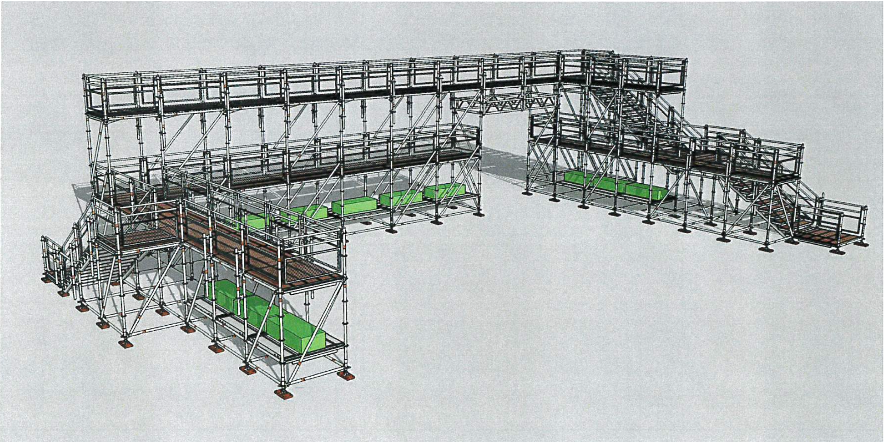
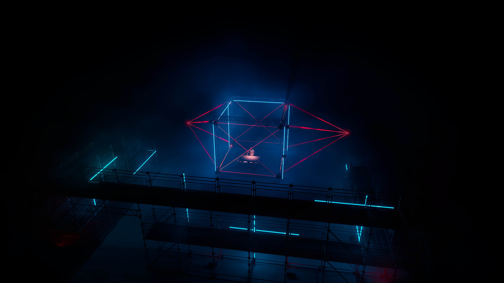
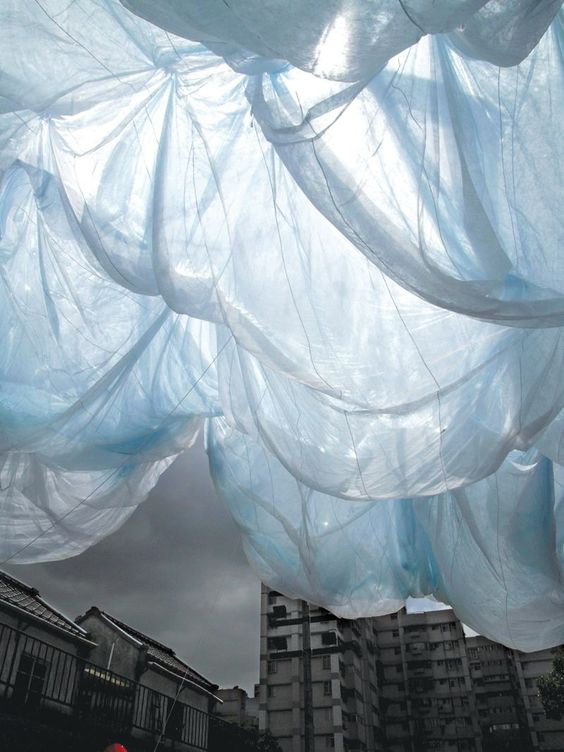
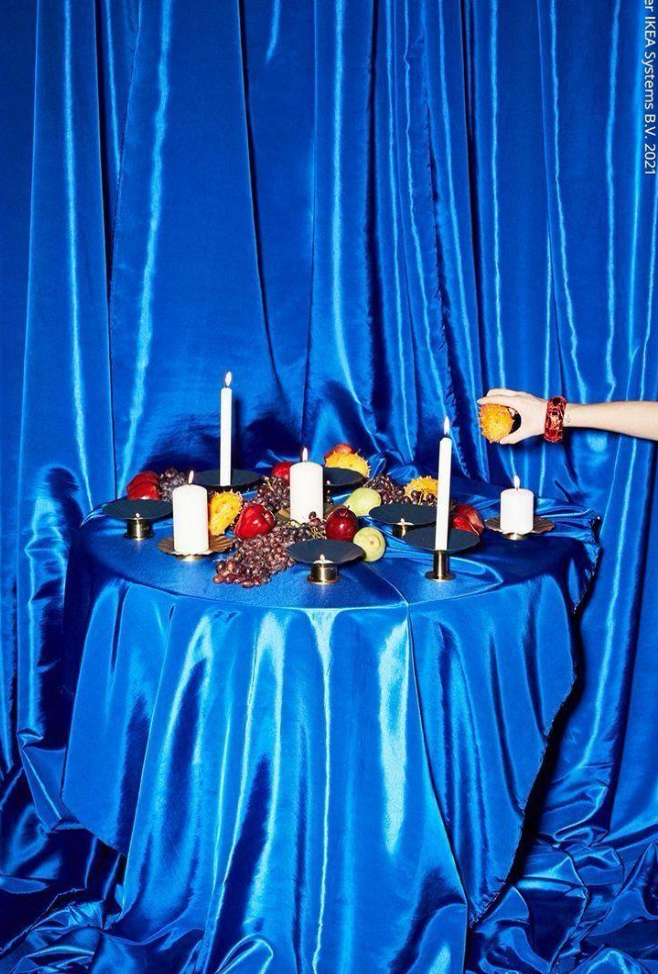
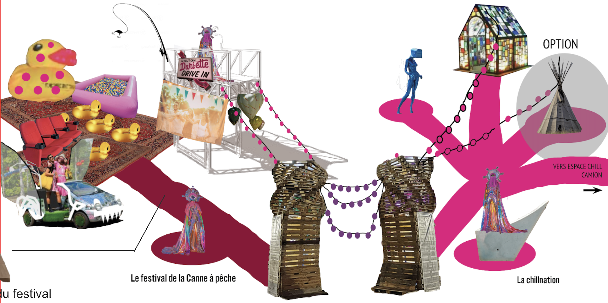
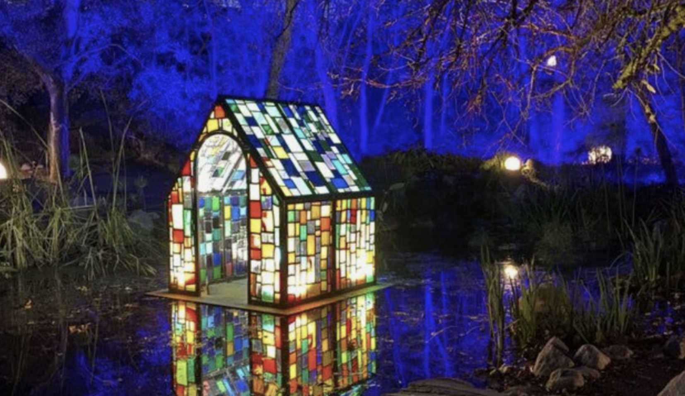
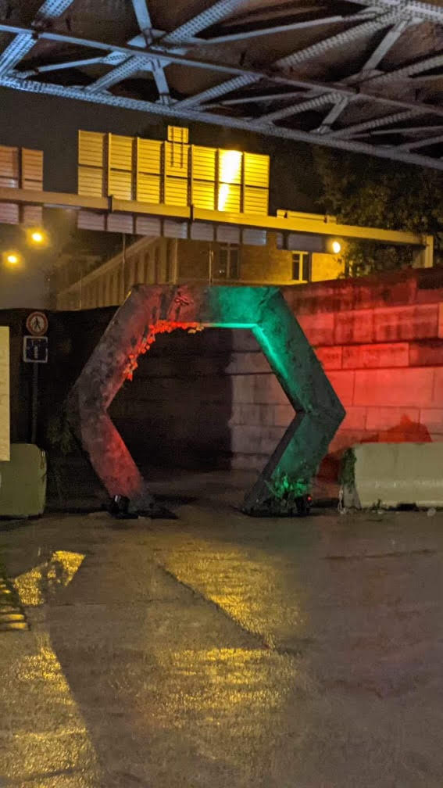
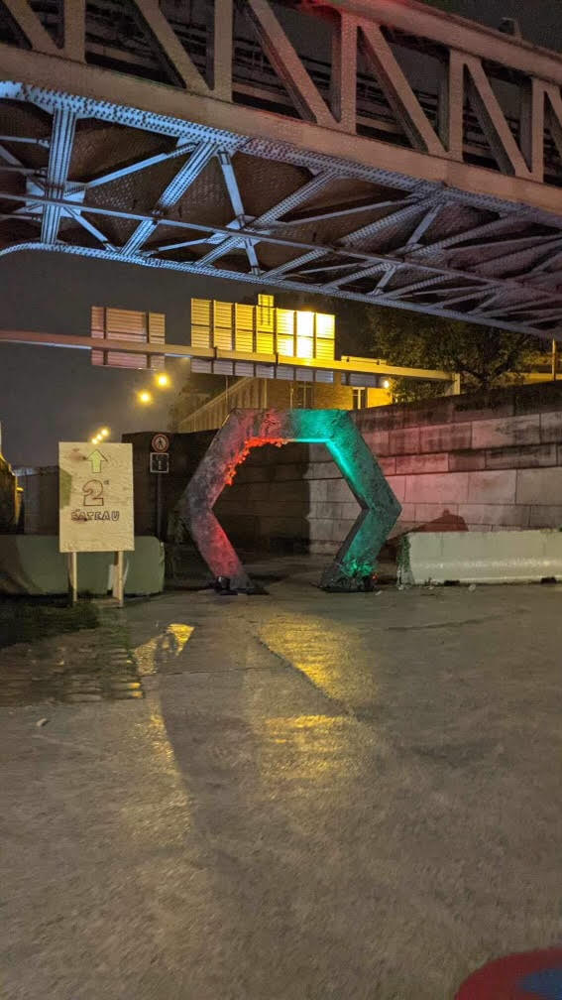
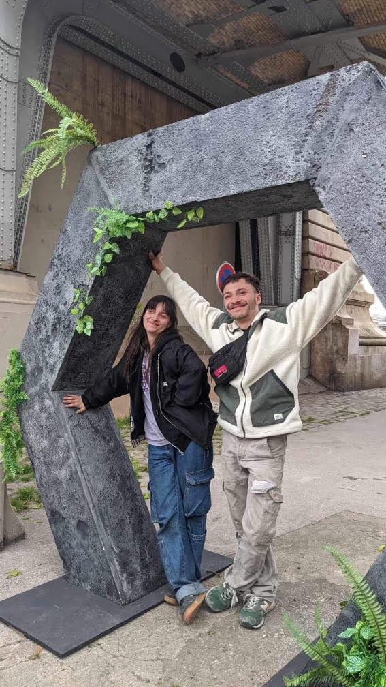

Le ministère des affaires intermicronationales
Cette année la Coucoolie a maintenu des relations institutionnelles avec différents collectifs et a créé de nouveaux ponts vers l'intermicronational. Parmi les projets,
celui des scènes :
- La SuperTechnova, scène échaffaudages, clou du spectacle échaffaudé par notre Ministre et l'ensemble de son ministère sera bien chouchoutée avec en décor le collectif Stupéfiantes, en habillage lumières le collectif Ascidacea et le collectif Oyé pour des VJsets.
- Nous recevons le sulfereux collectif Oundène pour la décoration du Cabaret Sulfureux tout en drapés
- La scène Pop Up, encore une nouveauté cette année, qui popera quelques heures chaque soir, sera illuminée quant à elle par Lenny
- Le collectif Green Resistance associé au collectif DRiiiNG nous ont préparé un voyage dans les nuages avec une scène SOL/AIR entre sol et air.





celui des immersions :
- Le collectif Merveille, nous a préparé un show digne du Dindon. Installé dans la praire, le festival de Cannes à Pêche fera le lien entre différents pour occuper et distribuer cet espace central.
- une immersion au sein de la maison des Daltons par Tom Beatnik
- le collectif WLTP qui avait construit les grandes arches l'année dernière, nous prépare un tunnel pour rejoindre la scène A6.
- ... ajouter la suite





et une série de chills que vous pourrez découvrir sur place
- chill montgolfière
- chill disco camion
- chill reine des neiges
- chill camping
- chill boumboum avec le collectif enfants sauvages